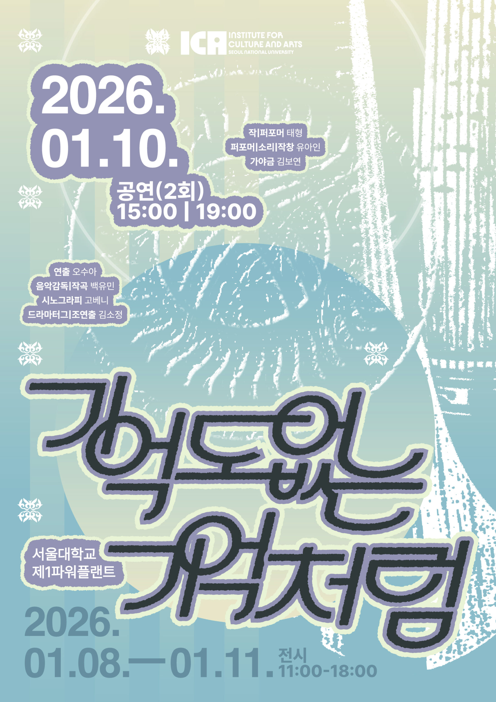
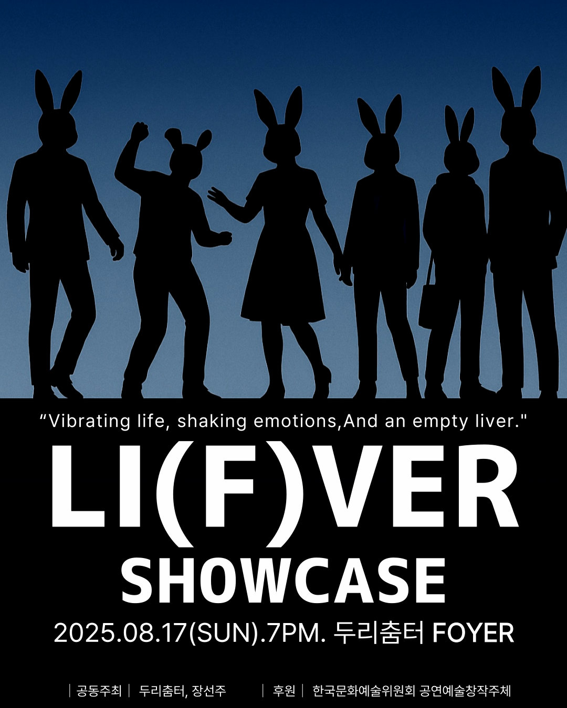
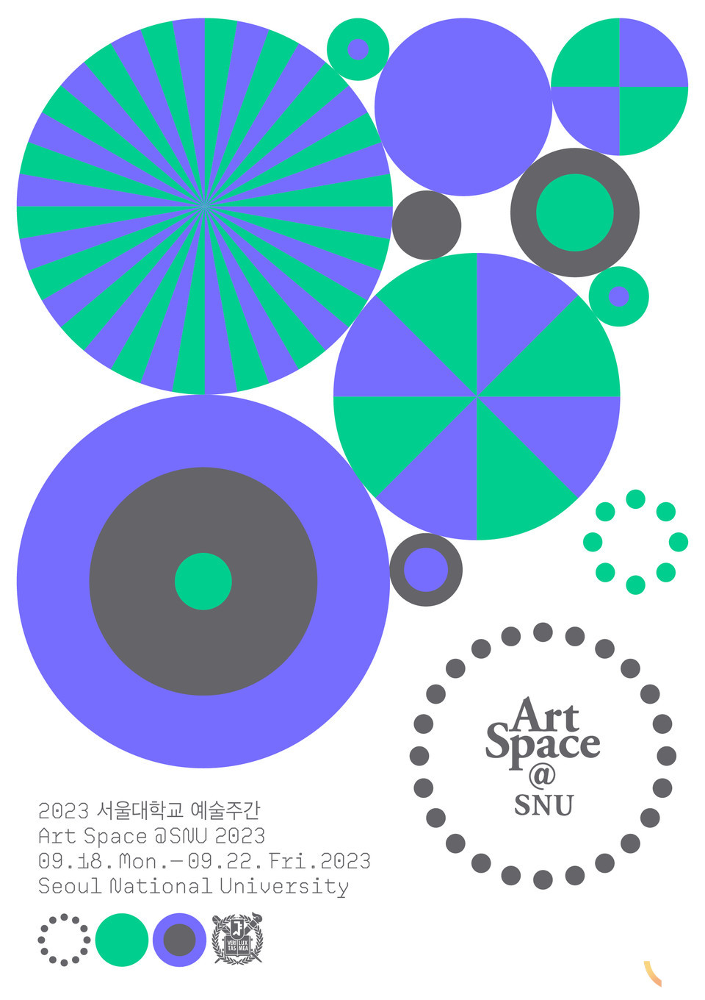
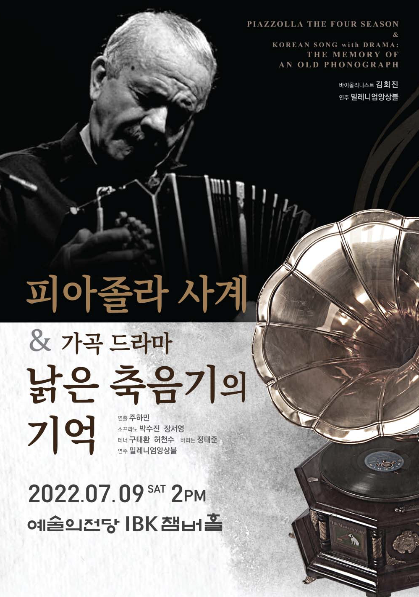
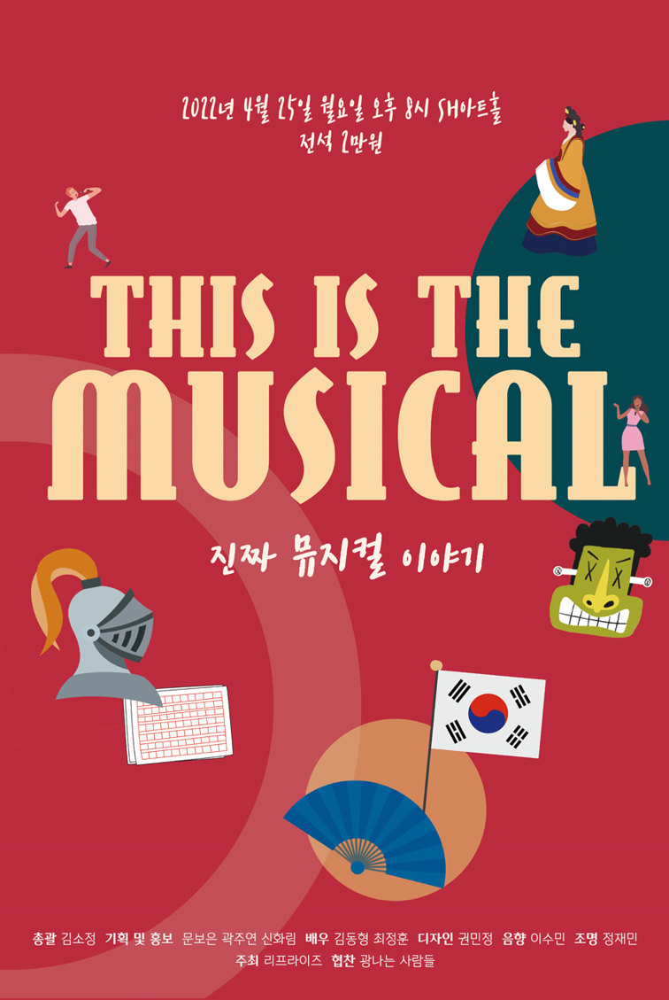

한국과 키르기스스탄의 국제 교류 공연으로 두 나라 간의 보편적인 정서를 한국의 전통 악기인 가야금과 키르기스스탄의 전통 악기인 코무즈와 결합해 음악으로 표현하고, 판소리와 키르기스스탄과 한국의 유사한 전통 공연을 결합한 공연.

한국과 키르기스스탄의 국제 교류 공연으로 두 나라 간의 보편적인 정서를 한국의 전통 악기인 가야금과 키르기스스탄의 전통 악기인 코무즈와 결합해 음악으로 표현하고, 판소리와 키르기스스탄과 한국의 유사한 전통 공연을 결합한 공연.

별주부전에서 토끼가 '간이 없다'고 이야기한 점에 집중해 '토끼의 간'을 현대인의 정체성으로 각색한 작품

개인-사회-자연-우주의 '사이'를 드라마와 애니메이션, 가야금으로 표현한 조망한 작품

윤동주 시인의 독립 운동과 죽음을 가곡으로 재구성한 공연. <피아졸라 사계 가곡드라마 낡은 축음기의 기억> 공연 내 서브 텍스트로 진행됨

한국 뮤지컬의 시작과 발전, 뮤지컬의 배우의 삶이라는 주제로 진행한 토크 콘서트
